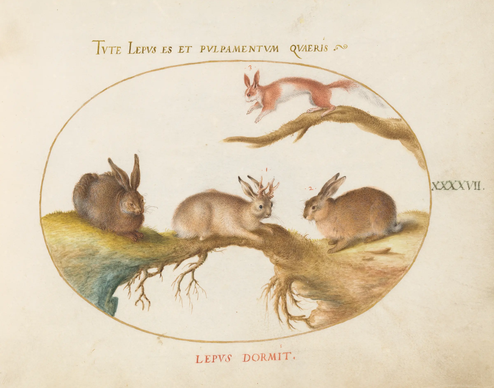
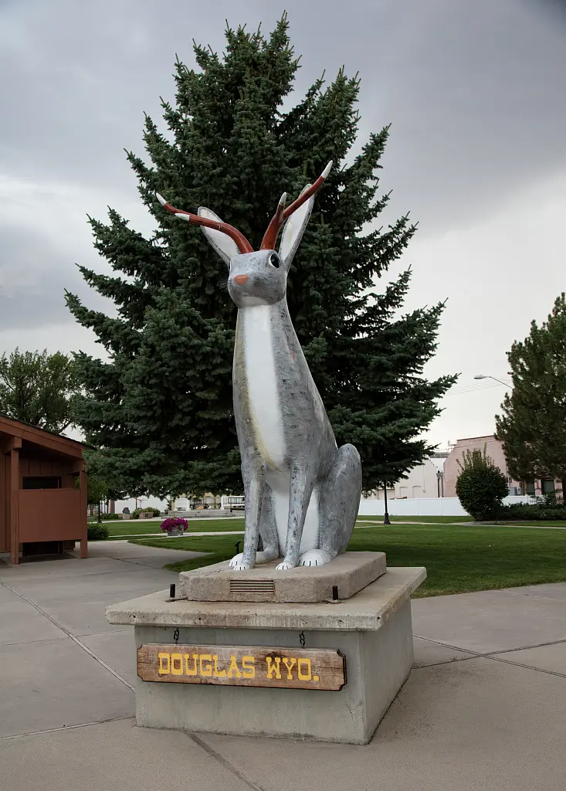
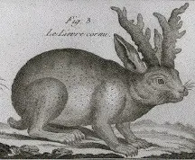
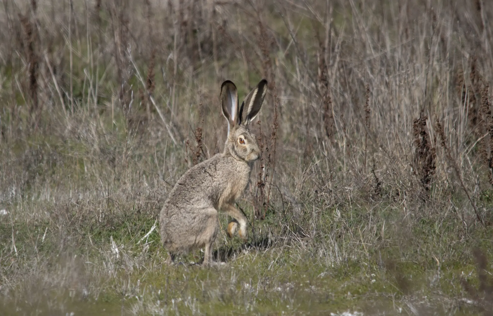
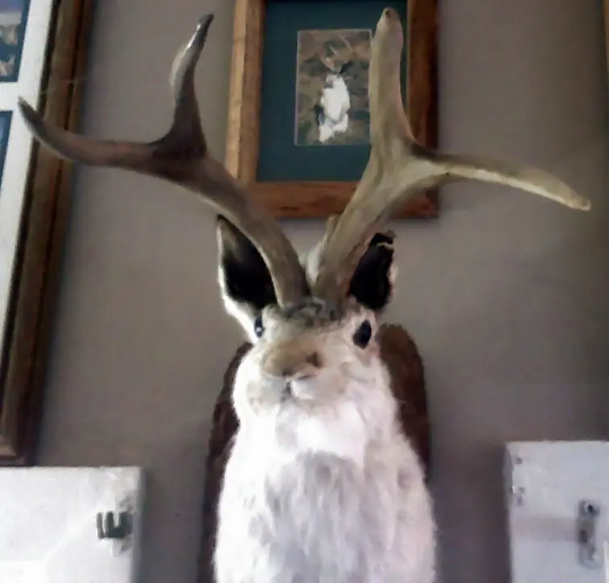
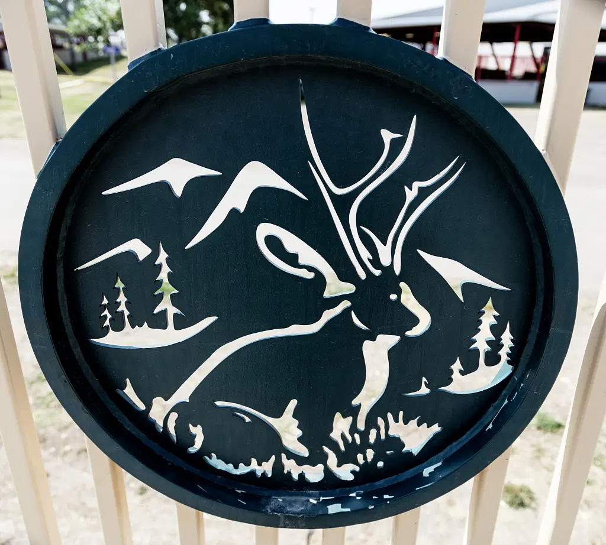
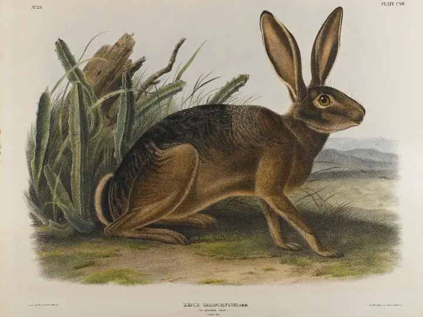

The Jackalope.
A hare with a rack of antlers became the American West's perfect impossible animal. The mounts are real. The species is not.
An impossible animal with a documented habitat.
No verified body, breeding population or genetic sample establishes an antlered hare. The jackalope lives somewhere else: taxidermy shops, roadside America and a Wyoming town that chose to keep the joke alive.

The familiar body is a jackrabbit or hare carrying deer antlers. The name combines “jackrabbit” and “antelope,” but both halves hide a taxonomic twist: jackrabbits are hares, and North America's pronghorn is not a true antelope.[07] [08]
Many souvenir mounts use deer antlers or antler tips—not pronghorn horns. The object was never subtle, and it was not meant to be.
Archive rule: the physical mount is real evidence of folklore, not evidence of a species.
1932
Ralph Herrick's dateIn the New York Times obituary for Douglas Herrick, Ralph said a dead jackrabbit slid beside deer horns in the shop and inspired the mount. The obituary explicitly notes that other accounts give later years.
- Named family source
- Recorded decades later
- First mount reportedly sold for $10
- Displayed at Douglas's Bonte Hotel
1934
The official local versionDouglas's current history page tells the same accidental-composition story but dates it to 1934. The city says the brothers' business helped make Douglas the “Jackalope Capital of the World” by the late 1940s.
- Official civic source
- Same makers and place
- Same core origin anecdote
- Different year
Archive date: early 1930s. Choosing 1932 or 1934 as uncontested fact would make the story cleaner than the record.
A horned hare on vellum.
Hoefnagel's watercolor and gouache plate places one branching-horned hare among ordinary animals. It proves that the image existed in early modern Europe. It does not document a zoological specimen.

A name is not a species.
The 1789 engraving appeared in an encyclopedic natural-history setting. Historical publication explains why horned rabbits could look authoritative without meeting modern standards of specimen evidence.
The animal and the object separate cleanly.
One photograph shows a living black-tailed jackrabbit. The other shows what human hands add.

A hare without horns.
Jackrabbits are hares: long-eared, long-legged animals whose young are born furred and open-eyed. No normal anatomy produces a symmetrical deer-style antler rack.[07]

The classic silhouette.
Hare head. Deer antlers. A convincing seam and a story strong enough to finish the illusion. The mount explains the icon without requiring an unknown animal.
Lesions—not antlers.
Colorado Parks and Wildlife describes black skin nodules, usually around the head, that can become elongated and hornlike. Wild cottontails often survive and the growths may regress.
The virus is specific to rabbits and does not cause disease in people or other species. It can seriously affect domestic rabbits, which should be evaluated by a veterinarian.
Read the wildlife guidanceBest reading: a real look-alike that may reinforce the legend—not the source of a living jackalope species.
Douglas tells the joke in-universe.
The city's official page gives the animal a complete impossible ecology. Every detail below is folklore, not a field observation.[01]
Ninety miles per hour
Speed makes the creature impossible to catch and conveniently difficult to document.
Lightning season
Jackalopes supposedly breed only during lightning flashes, keeping the population naturally rare.
Whiskey and voices
They favor whiskey and mimic cowboys, sometimes calling out false directions to hunters.
June thirty-first
The hunting license is valid from midnight to 2 a.m. on a date that does not exist.

Douglas is the official home.
Reporting from the Herrick family history says Governor Ed Herschler pronounced Douglas the jackalope's official home in 1985. That supports a place-based proclamation.
- The Wyoming Secretary of State's symbol list does not include the jackalope
- A 2001 bill proposed creating an official mythical-creature designation
- Best wording: signature creature of Douglas, Wyoming
- Avoid: Wyoming's official state mythical creature
What is real, what is reported and what is unsupported.
The case becomes clearer when material culture, biology and zoological evidence stay in separate columns.
The creature existed on paper before it existed on a wall.
The cultural timeline is secure even where the Wyoming origin year remains open.
Hoefnagel paints a horned hare
A public-domain vellum work establishes the older European image motif.[03]
Lepus cornutus enters an encyclopedia
Robert Bénard's engraving places the image in a natural-history context.[04]
Rabbit papillomatosis is experimentally documented
Richard E. Shope and E. Weston Hurst publish the foundational infectious-papillomatosis paper.[05]
Douglas becomes the proclaimed official home
Governor Ed Herschler's wording supports the town's claim without making the jackalope a statutory state symbol.[02]
The animal was assembled. The folklore grew on its own.
No zoological evidence supports a living antlered hare. The jackalope remains unusually valuable because its other evidence is so good: named makers, surviving mounts, older images, a biological look-alike and a city that made an impossible animal part of its identity.
Cultural phenomenon confirmed. Taxidermy origin documented. Living species unsupported.

Objects, records and biology—not repeated lore.
The source trail distinguishes the city's in-universe story, family recollection, official records, historical art and wildlife science.
- 01City of Douglas · Meet JackOfficial civic history and deliberately tall-tale field guide; gives 1934 for the Herrick origin.Open ↗
- 02New York Times · Douglas Herrick obituaryReprinted by SFGATE. Quotes Ralph Herrick, records the 1932 claim, competing dates, first sale and 1985 proclamation wording.Open ↗
- 03National Gallery of Art / Wikimedia Commons · Hoefnagel plateObject record, date, dimensions and public-domain status for the c. 1575–1580 horned hare.Open ↗
- 04Wikimedia Commons · Lepus cornutusObject record and public-domain status for Robert Bénard's 1789 engraving.Open ↗
- 05Shope & Hurst · Infectious Papillomatosis of RabbitsOriginal 1933 experimental paper in the Journal of Experimental Medicine.Open ↗
- 06Colorado Parks and Wildlife · Rabbit PapillomasCurrent wildlife guidance on appearance, transmission, prognosis and rabbit specificity.Open ↗
- 07National Park Service · Black-tailed JackrabbitSpecies profile clarifying that jackrabbits are hares.Open ↗
- 08National Park Service · PronghornOfficial animal notes clarifying that pronghorn are not true antelope and explaining their horns.Open ↗
- 09Wyoming Secretary of State · State SymbolsOfficial state-symbol list; the jackalope is not included.Open ↗
- 10Wyoming Legislature · 2001 H.B. 0101Official proposed legislation to designate a state mythical creature.Open ↗
- 11Library of Congress · Douglas jackalope statueCarol M. Highsmith photograph, 2015; no known restrictions on publication.Open ↗
- 12Library of Congress · Jackalope Bridge detailCarol M. Highsmith photograph, 2015; no known restrictions on publication.Open ↗
Horned-hare hero and historical plate
Joris Hoefnagel, c. 1575–1580. National Gallery of Art. Public domain. Resized and toned.
Douglas jackalope statue
Carol M. Highsmith, 2015. Gates Frontiers Fund Wyoming Collection, Carol M. Highsmith Archive, Library of Congress, Prints and Photographs Division. LC-DIG-highsm-34035. No known restrictions on publication.
Jackalope Bridge detail
Carol M. Highsmith, 2015. Gates Frontiers Fund Wyoming Collection, Carol M. Highsmith Archive, Library of Congress, Prints and Photographs Division. LC-DIG-highsm-34065. No known restrictions on publication.
Lepus cornutus
Robert Bénard, 1789. Public domain. Low-resolution historical reproduction; not used as a hero.
Taxidermy jackalope mount
SedesGobhani, 2008. Dedicated to the public domain. This is a constructed mount, not a specimen.
Black-tailed jackrabbit
Peter Pearsall / U.S. Fish and Wildlife Service. Public domain. This known animal has not been digitally altered.
California Hare conclusion image
John James Audubon, c. 1847; Brooklyn Museum. Public domain / no known copyright restrictions.
Research cutoff · 23 Aug 2026No AI imagery · City hunting-license scan linked in source, not republished